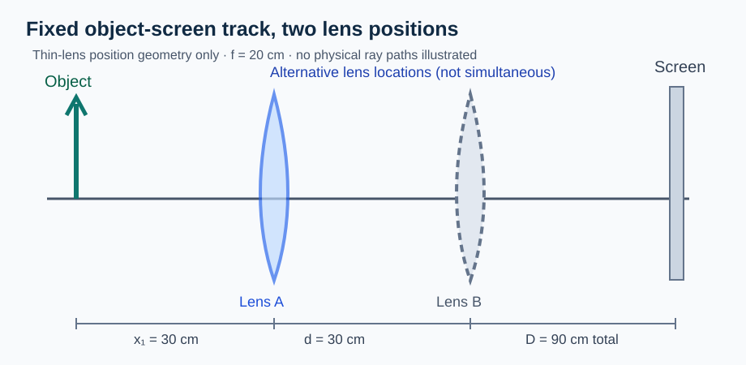

Continuous Core1A textbook manuscript · R1 candidate
Academic disposition: AUTHOR_EXPOSED_DRAFT · SOURCE_REVIEW_HOLD · NOT A PUBLISHED TEXTBOOK. Curriculum basis: CBSE Class X Science 2026–27 (optics and human eye). Quantitative compound-lens inverse systems and total internal reflection are marked EXTENSION until independently warranted. Prior lens-displacement work is retained as a candidate lineage; no old exam-source assertion is inherited.
1. When does a light ray change direction?
A straight straw partly immersed in water often appears bent at the surface. The straw itself is not bent. Light traveling from the immersed portion changes its direction where it crosses the water–air boundary, and the eye traces the incoming ray backward along its final direction. This is refraction: a change in propagation direction associated with a change of optical medium, except where the ray enters normally and continues along the normal.
Start every ray drawing with three things: the boundary between two materials, the normal at the point of incidence, and an arrow giving the direction of travel. Measuring an angle relative to the surface instead of the normal is a frequent source of false numerical answers.
A ray passing from air into ordinary glass generally bends toward the normal; from glass into air it generally bends away, for oblique rays satisfying refraction conditions. More exactly, the direction depends on relative refractive index, not a list of memorized “denser” labels.
2. Speed, refractive index and Snell's law
Refractive index expresses how fast light propagates in a medium compared with its speed in vacuum: n=c/v in the simplified isotropic setting. It does not indicate that light is delayed by mechanically colliding with isolated particles at the surface. For refraction at a plane interface, n_1\sin i=n_2\sin r, where both angles are measured from the normal.
A useful derivation of direction is qualitative: if n_2>n_1, then for nonzero refraction angles \sin r=(n_1/n_2)\sin i<\sin i, so r<i. The ray approaches the normal. The equation also imposes a physical domain. If the algebra requires \sin r>1, no ordinary refracted ray satisfying those assumptions exists; the boundary requires a different treatment.
Worked anchor: Light travels from air (n_1=1.00) into glass (n_2=1.50) with incident angle 30^\circ. Then \sin r=(1/1.5)\times0.5=1/3, so r is about 19.5^\circ. The result must be smaller than 30^\circ, in agreement with the direction diagram.
3. A parallel glass slab: why do the emergent rays stay parallel?
A ray entering a plane-parallel slab bends toward the normal at the first boundary. At the second boundary the ray bends away. For the same medium outside both faces and parallel surfaces, the final emergent direction is parallel to the incident direction, although the emergent ray can be laterally displaced.
Parallel does not mean coincident. The lateral separation depends on incident angle, slab thickness and refractive index. At normal incidence, the geometric lateral displacement is zero. This result is built from the two local refractions; it is not a universal statement about arbitrary blocks with non-parallel faces.
Model check: Rotate the slab so its faces remain parallel but the incident angle changes. The emergent direction remains parallel to the incident ray in the ideal model, but the lateral displacement generally changes.
4. Apparent depth: do not universalize a small-angle shortcut
Looking into water from above, the bottom may appear shallower than its actual depth. The eye receives refracted rays and extends them backward as if they had traveled straight throughout. In a near-normal, paraxial arrangement with a plane interface, the familiar approximate relation “apparent depth = real depth × n_{\rm observer}/n_{\rm object}” can be derived geometrically.
That relation is not exact for arbitrary viewing angles. A D3 model-selection question should ask whether the scene is sufficiently near-normal and whether the observer and object media are correctly identified. If a student copies the apparent-depth formula onto an oblique or strongly curved interface without checking its assumptions, the error is a model problem rather than an arithmetic one.
5. A lens makes refraction work at many points
A thin converging convex lens bends suitable near-axis rays so that a parallel beam tends toward a common focal region. A thin diverging concave lens spreads such rays. The principal axis, optical centre, focal points and focal length are geometric references for drawing the ray system. We use idealized paraxial rays; real lenses can have aberrations, especially far from the axis.
Teach image formation with two independently traced rays, not with a memorized table alone. A ray parallel to the principal axis passes through the appropriate focus after a converging lens; a ray through the optical centre is approximately undeviated in the thin-lens model. Where the real outgoing rays intersect, a real image can be formed on a screen. Where only their backward extensions meet, the image is virtual.
A screen image proves that light actually meets at the screen. A virtual image cannot be projected there by inserting a screen at the apparent location.
6. Image zones for a converging lens
For a real object farther than twice the focal length, a converging thin lens forms a smaller inverted real image between f and 2f on the opposite side. At 2f, the real inverted image is of equal size. Between f and 2f, the real inverted image lies beyond 2f and is magnified. As the object approaches the focal plane from beyond, the real image distance becomes very large.
When the object lies inside the focal length, outgoing rays diverge and their backward extensions can locate an enlarged upright virtual image on the same side as the object. There is no corresponding real image on a screen behind the lens.
The table of image cases is therefore a consequence of ray geometry and the conjugate relation, not the source of understanding. A D3 explanation should reconstruct it from rays and object distance.
7. Use one coherent sign convention
For a thin converging lens forming a real image of a real object, let u>0 be the magnitude of object-to-lens distance and v>0 the magnitude of lens-to-screen distance. Then 1/f=1/u+1/v. This positive-magnitudes relation applies directly to that real-imaging geometry.
A signed Cartesian convention instead takes the real object position negative if light travels left-to-right and positive coordinates point right, with the lens relation 1/f=1/v-1/u_{\rm signed}. Both approaches agree when their definitions are used consistently. They must not be mixed in the same substitution.
Worked anchor: A real object is 30 cm from a thin converging lens with f=20 cm. 1/v=1/20-1/30=1/60, so the real image forms at v=60 cm opposite the object. The magnitude of magnification is 60/30=2; the screen image is inverted. Substitute back to check.
8. Image magnification and lens power
Linear magnification compares image and object heights. For the real-image positive-distance convention just used, the magnitude is |m|=v/u, and the sign is negative for an inverted image. In a consistent signed Cartesian convention, magnification for a thin lens can be written m=v/u_{\rm signed}. A negative sign has a physical meaning, not merely a calculator convention.
Lens power is P=1/f when f is measured in metres, with unit dioptre (D). A converging lens has positive power in the standard sign convention; a diverging lens negative power.
Worked anchor: A +2.0 D thin lens has f=0.50 m. A student who writes f=0.5 cm has mixed metres and centimetres. Converting units is part of the model execution.
9. Why two sharp positions can occur on a fixed object-screen track
Now the major advanced construction. Fix a real object and a screen a distance D apart. A converging thin lens moves between them. Let x be its object distance; its image-screen distance is D-x. Substitution gives
Rearranging produces x^2-Dx+fD=0. The discriminant is D^2-4Df. Two distinct positions are possible only when D>4f. At D=4f the two roots coincide: one physical lens position, not two. For D<4f, no sharp real-screen image can be produced under this ideal model.
The expression x(D-x) reaches its maximum D^2/4 at the midpoint. This geometric argument provides a second check independent of the algebraic discriminant.
Worked anchor: With D=90 cm and f=20 cm, x^2-90x+1800=0, giving x=30 cm or x=60 cm. In the first position the image magnification magnitude is 60/30=2; in the other it is 30/60=1/2. Both images are inverted but have different sizes.
10. The inverse displacement method
Suppose the two lens positions are separated by distance d. Their object distances are roots with sum D, difference d, and product fD. Using
gives x_1x_2=(D^2-d^2)/4, hence
This is a result of the model, not a magic formula to hand out first.
Connected example: If D=80 cm and the measured lens displacement is d=40 cm, f=(6400-1600)/320=15 cm. The check D>4f, or 80>60, is satisfied.
Boundary: As d\to0, D\to4f for the two positions to merge. If a measured record reports two separated positions while D<4f, review the lens model, source-screen setup and measurements before trusting an inferred f.
11. Refraction by prisms and dispersion
A prism has non-parallel refracting faces. An incident ray changes direction at its entry and exit, producing an overall deviation related to prism angle, angle of incidence and refractive index. A prism is not the same as a parallel slab; its emergent ray is generally not parallel to the incident ray.
In a dispersive material such as ordinary crown glass under visible light, refractive index varies with wavelength. White light may therefore separate into colours. Violet light is generally deviated more than red in standard visible-glass demonstrations; do not assume identical behaviour for every material and wavelength without evidence.
Compare three diagrams: a parallel slab, an ordinary prism, and two prisms arranged oppositely. What remains invariant, and what changes? A pupil who memorizes “glass bends toward the normal” at one surface cannot safely infer the overall path without both boundaries.
12. Scattering is a different mechanism
The blue appearance of a clear daytime sky and redder sunsets are often discussed using wavelength-dependent scattering. This is not identical to prism dispersion or the refraction of a ray at an abrupt interface. The eye receives light that has been redirected by particles and molecules in the atmosphere. Simple Rayleigh-type reasoning emphasizes stronger scattering of shorter visible wavelengths under suitable assumptions, but atmospheric conditions and observer geometry matter.
Discrimination exercise: A triangular glass prism produces an ordered spectrum on a screen; distant hazy blue light is seen from a region of the atmosphere. Which mechanism would be modeled in each case? The deciding evidence is the physical interaction and geometry, not the fact that both phenomena involve colour.
13. The human eye forms a real image
The cornea and crystalline lens contribute to focusing light onto the retina. The retinal image is real and inverted; perception is not described by the eye acting as a literal projector onto an external screen. The eye changes its optical focusing strength through accommodation, within physiological limits.
For a distant object, incoming rays are approximately parallel; for a nearby object, the incoming rays diverge more strongly. A healthy accommodating eye adjusts its optical system to maintain a focused retinal image across a range of distances. Optical geometry, retinal position and accommodation are therefore coupled.
14. Myopia and hypermetropia are focusing problems
In myopia the eye's optical system brings distant rays to a focus in front of the retina under relaxed viewing conditions. A diverging corrective lens reduces convergence so that the total optical system can bring distant images onto the retina. In hypermetropia, nearby objects are difficult to focus; a converging corrective lens can help by reducing the accommodation needed for nearby objects. Presbyopia, related to reduced accommodation with age, is conceptually distinct from assuming every blur is caused by eye length alone.
A corrective lens must be selected from the stated focal-position defect. Memorizing “minus for myopia, plus for hypermetropia” is an outcome; explaining why the correction works is the scientific demand.
Boundary check: A student says an eye can always accommodate arbitrarily close objects by increasing curvature without limit. Explain why the physical accommodation range makes the claim false.
15. Optical instruments as connected systems
Simple magnifiers, microscopes and telescopes use the image-making ability of lenses or mirrors. The objective and eyepiece can play different roles. For a school-level qualitative account, describe how an objective first collects light and forms an image or angular transformation, while an eyepiece makes that intermediate optical information easier to inspect.
A multi-element instrument is not one thin lens with an artificially chosen combined focal length. Full quantitative multi-lens inverse calculations are separately marked as advanced extensions until justified. Qualitative diagrams should identify which image is intermediate and which rays enter the observer's eye.
16. Measurements, interpretation and uncertainty
A distant-object lens experiment approximates parallel incoming rays. Moving a screen to focus on a remote object gives an approximate focal-length measurement. The object is not literally at infinity, the lens is not perfectly thin, and screen placement has finite precision. Recording an uncertainty and a method is more informative than writing three decimal places.
In a displacement experiment, students need to measure D, x_1, x_2 and d=|x_2-x_1| consistently. They should inspect whether two distinct sharp positions are actually resolved, whether the lens was centered, and whether the experiment is within the thin-lens regime.
17. Synthesis and D3/D4 transfer expectations
The chapter has built a sequence: the change of ray direction at an interface; ray-construction for lenses; mathematical conjugate imaging; a fixed-distance constraint; an inverse measurement; and finally the way the human eye uses optical focusing.
The first target is REPRESENT: preserve the correct meaning while translating a ray diagram into distances and equations. The second is MODEL: choose between a free object–image arrangement and a fixed object-screen arrangement, and explicitly state the thin-lens assumptions. The third is JUSTIFY/SYNTHESIZE: prove a two-position condition or link multiple constraints in the correct order. The D4 extension is not an automatic label. It requires a fresh task with an independently assessed decisive inference and defensible five-factor evidence.
End-of-chapter investigations: Construct the two-location lens condition in your own words; reject a student's report of two distinct lens positions at D=4f; distinguish the role of a screen image from a virtual image; explain why a myopia correction uses a diverging element; and design an experiment to distinguish a prism's dispersion from scattering in air.
What remains: This is an original continuous draft, not a fully qualified 17-subtopic C05 chapter package or a source-authenticated paper reproduction. PH10-09 and PH10-13 have linked native candidate packages. Other PH10 subtopics remain Phase 0 proposals awaiting individual C02/C03/C05 review. Existing historical lens/prism reconstruction identities are not silently promoted or replaced.